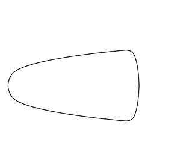

Started 1/12/20. Last edited 2/12/20.
Note: this document is the typological equivalent of a scrap piece of paper, and will likely never be finished.
It is currently in the process of being structured and clarified.
“ScS. Bede”
Scout-class pontoon
ISCBD01
The speedy Bede gained its fame for being the first scout to follow the merchant cog MhS. Olander through the Eldritch portal it had disappeared into. Aside from its prominent place in the history of Vosdence, the pontoon itself is relatively nondescript, being a simple ScS (scout-class) vessel made by the dozen for patrols and routine missions helmed by the Commerce Chamber.
For my school thesis – Icons in Ink – I expressed the arc of Rowen’s journey through the semiotic realms of his own mind, using architectural and spatial connotations to describe complex, abstract psychological phenomena. It was a richly rewarding experience, seeing those “stage-sets of the brain” expressed tangibly on paper: but what was described in the book could only represent a fraction of the vast world that had been conjured but not written down! After completing that paper I experimented with ways to build on it and tell the story of those characters and places. I began by trying to continue with the comic in a periodic manner better suited to publishing online, but stopped almost straight away because the outcomes never matched the (very specific, in hindsight) typologies of transmission that I had in mind. I also tried a game which described a story which was to play out on a plane parallel to the one which contains Vosdence, but that also never worked out for other reasons.
I realised that I was always trying to push these stories into the realm of popular media, (a) because I was aware of those media and thought that they were the only options available, and (b) because I was so intent on being understood. I wanted someone to read my work and say “hey, I get this, and I totally relate to it”. But that’s not quite how it works!
A work that’s intrinsically and deeply personal shouldn’t have to make a compromise with a medium that it really doesn’t belong in, or that is not suited to the creator. I don’t read many comics or play many games – and so I’m thinking that I should work with a form that I am more familiar with. I knew this all along, in a sense. But now I am becoming more and more prepared to admit that the genre of documentation – paper-work, letters, maps, and contracts, might be more than just an ASD-fuelled joy-ride to simply be ashamed of. It might actually have some mythical and emotional value. Shame is a big part of this (unfortunately)! I didn’t want to be that weird guy who drew up fake tables for fun. But the more confidence in myself I gain, the more I realise that I really do want to be that person. I want to be proud of that person. And now, who knows what could happen.
This is a meticulous and detail-centric concept that I am very curious to see tested in the art of world-building: the recording of a networked, inter-related population of bite-sized factual instances which together make up the sum of our knowledge of this fictional world. Let’s take a look at a really simple example:
Vosdence is an island.
First of all, the square brackets indicate the node’s ID. A useful tool for linking, relating, and interweaving facts, the code identifies a piece of information and gives it a reference. The “F-” is a prefix which demarks this code as a fact – there are other types of code such as documentation codes, which we will cover later. The “-P” suffix indicates that the node is public knowledge. This is important because some public documents might have dependancies on secret nodes, which are signalled with an “-S”. Nodes are always given a eight-character internal code, which is split into abbreviations for the two keywords which best describe the fact followed by an instance number. To best describe all of these points, let’s say we have a private fact which goes like “there is an island that is called Vosdence.” I would assign this node the code F-ISLVOS02-S, which, like what happens in hash tables, is assigned a ‘02’ to avoid conflicts. But this is a bad example as double-ups should always be avoided!
There is a lot of re-working I want to do here! First of all, we need to discuss objects (or instances) a little more, and then… I’d like to add a new type: “properties”. These would be nodes which did not describe a change in events. Appendix I contains a case study of my new system, which should help in writing the next draft of this document.
One of the first letters that will likely appear in the Vosdence Archives is a letter from the Consulate to the explorers who have stumbled upon the island, acknowledging their discovery as a spiritual revelation and directing them to collect as much information about the island as possible. This would be D-BLT-001-P, the first business letter (BLT) in the Archives; “D-” is used as a documentation marker, and the private/public distinctions still apply. We can extract from this description of the consulate letter that:
The Consulate holds the accidental discovery of Vosdence to be an act of divine revelation.
Given in the code definition is the full identification of the node, showing its association with the Consulate letter. There are three types of media in the Vosdence, and it is important that their differences and relationships are understood. Nodes form the core of the world. They are bare and unadorned pieces of information that are the single source of truth for describing Vosdence, whether they are written sentences or simple drawings*. Objects are instances within the world of Vosdence – more will be covered on this soon.
Since this document has descended into scrap notes, I thought I’d talk about how this all works in practice. Let’s turn our attention to the following instance:
[
ISCBD01]ScS. Bede (Scout-class pontoon)
Properties
- [
ISCBD01.CM1] ⊃ owned by the Consulate’s Maritime Division.- [
ISCBD01.SP1] ⊃ top speed of forty-seven knots.Sub-instances
- [
ISCBD01(SBCD01)] Crystal protective dome.
- [
ISCBD01(SBCD01).GD1-I] [⊃ general dimensions.]

Documentation
*It’s probably obvious that there is always going to be some subjectivity and interpretation involved in forming and curating these facts!